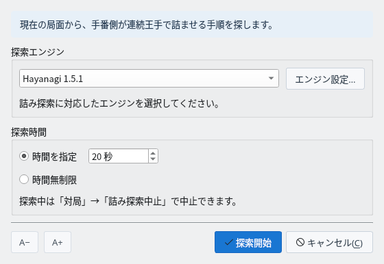
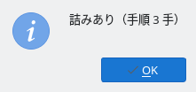
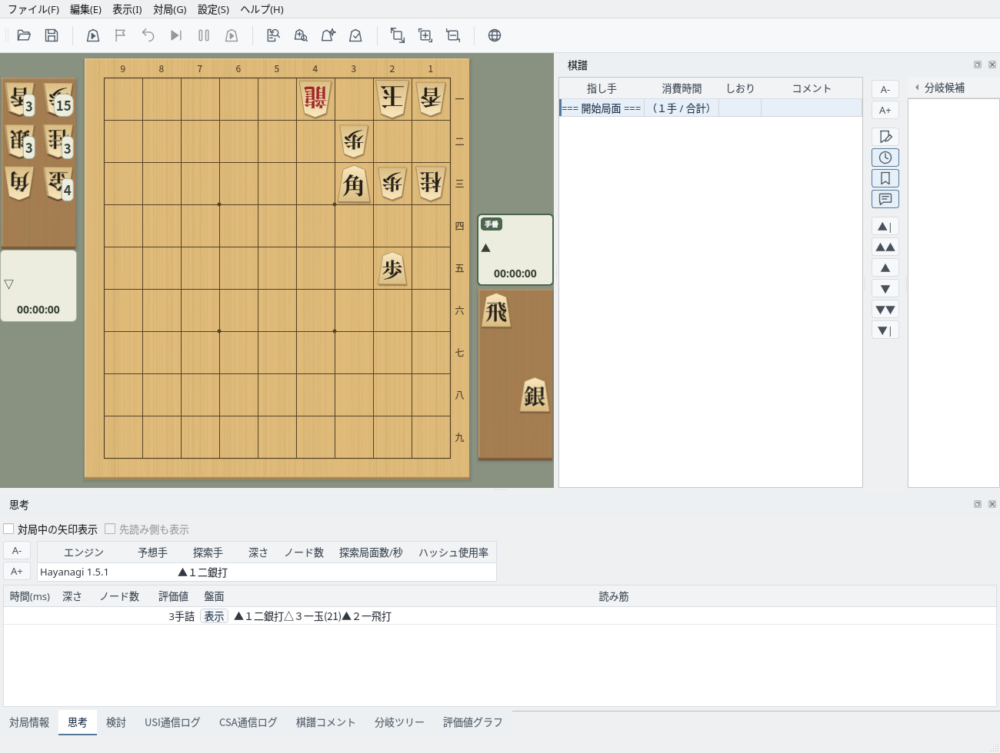
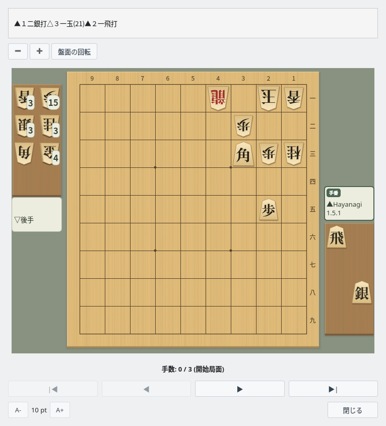
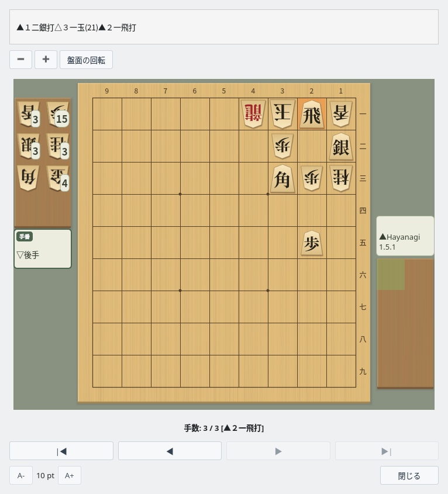

詰み探索
今の局面に詰みがあるかを、USIエンジンで調べる
局面の準備
詰みを調べたい局面を盤面に表示します
調べる局面を表示する
詰み探索は、盤面に表示している局面から、手番側が連続王手で相手の玉を詰ませる手順を探します。棋譜を開いて選んだ局面や、対局を終えた局面をそのまま調べられます。対局・検討・棋譜解析・局面編集の最中は使えません。
詰将棋のように局面を一から作るときは、「編集」→「局面編集開始」で駒を並べ、「編集終了」で確定します（盤面編集）。攻める側を手番にしておいてください。このガイドでは「編集」→「詰将棋初期配置」で置いた例題の局面を使っています。
探索の設定
詰み探索ダイアログでエンジンと探索時間を選びます
詰み探索ダイアログ
「対局」→「詰み探索…」で詰み探索ダイアログを開き、エンジンと探索時間を選んで「探索開始」をクリックします。選んだエンジンと探索時間は次回も使われます。

詰み探索ダイアログ：エンジンと探索時間を選んで「探索開始」
| 項目 | 内容 |
|---|---|
| 探索エンジン | 「設定」→「エンジン設定…」で登録したUSIエンジンから選びます。「エンジン設定…」ボタンで、選んだエンジンのオプションを変更できます。 |
| 時間を指定 | 探索に使う時間の上限を秒で指定します（初期値は20秒）。 |
| 時間無制限 | 詰みの有無が分かるまで探索を続けます。 |
| A− / A+ | ダイアログの文字の大きさを変えます。 |
詰み探索には、USIの詰将棋探索（go mate）に対応したエンジンが必要です。ShogiBoardQのHayanagi（同梱はLinux版のみ。登録方法はHayanagiのガイドを参照）や、komori-n氏が開発・公開している詰将棋エンジンKomoringHeightsを登録して使えます。エンジンの登録はエンジン登録のガイドで確認できます。
探索中は「対局」→「詰み探索中止」で中止できます。中止したときは結果を表示せずに終わります。
探索結果
探索が終わると結果が表示され、詰み手順は思考タブに残ります
結果のメッセージ
探索が終わると、結果がメッセージで表示されます。

結果のメッセージ：詰みあり（手順 3 手）
| 表示 | 意味 |
|---|---|
| 詰みあり（手順 N 手） | 詰みが見つかりました。N は玉方の応手を含めた詰みまでの手数です。 |
| 詰みなし | 連続王手では詰まないことが分かりました。 |
| 時間内に詰みを判定できませんでした | 指定した時間内に詰みの有無が分かりませんでした。時間を延ばすか、「時間無制限」で探索し直してください。 |
| （エンジン側）未実装 | 選んだエンジンが詰み探索（go mate）に対応していません。 |
思考タブの詰み手順
詰みが見つかると、「思考」タブに詰み手順の行が追加されます。「評価値」の列には「3手詰」のように詰みまでの手数が、「読み筋」の列には詰み手順が表示されます。

思考タブ：評価値は「3手詰」、読み筋に詰み手順
読み筋表示
詰み手順を盤面で1手ずつ再生します
読み筋表示ウィンドウを開く
思考タブの詰み手順の行で、「盤面」の列の「表示」をクリックすると、読み筋表示ウィンドウが開きます。上に詰み手順、その下に探索した局面が表示されます。

読み筋表示：開始局面（手数 0 / 3）
詰み手順を再生する
「▶」で1手ずつ進め、「▶|」で詰みの局面まで進めます。直前の指し手は盤上で強調され、手数の欄に何手目の指し手かが表示されます。

読み筋表示：▲２一飛打で詰み（手数 3 / 3）
| ボタン | 操作 |
|---|---|
| |◀ ／ ▶| | 開始局面に戻る／最後の局面（詰みの局面）まで進む |
| ◀ ／ ▶ | 1手戻る／1手進む |
| − ／ ＋ | 将棋盤を縮小／拡大する（盤上で Ctrl＋マウスホイールでも変えられます） |
| 盤面の回転 | 盤面を180度回転する |
| A- ／ A+ | ウィンドウの文字の大きさを変える |